전남 고흥 금산면의 폐교를 다문화 드론 교육, 캠핑, 드론 낚시, 트레킹이 결합된 올인원 융복합 플랫폼으로 재탄생시킵니다.
전남 고흥군 금산면 구 금산종합고등학교 폐교를
'교육 우선' 올인원 융복합 레저·교육 플랫폼으로 재활용합니다.
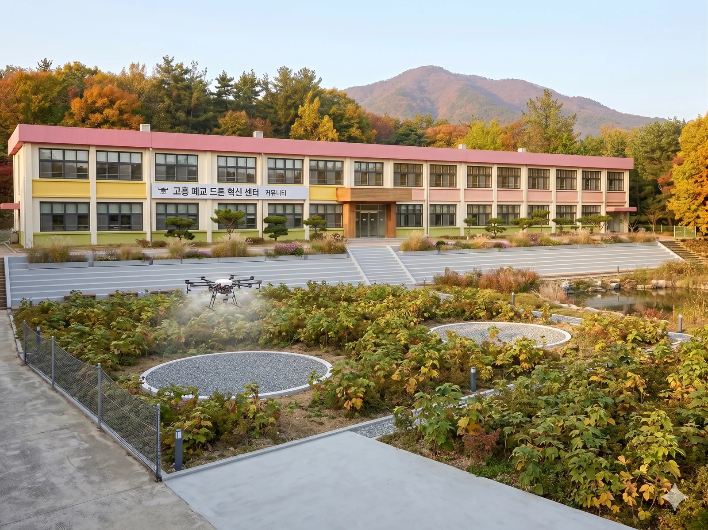
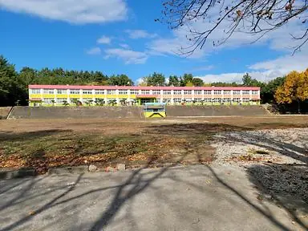
운동장을 활용한 오토캠핑, 차박, 글램핑 사이트. 텐트 간 15m2 이상 거리 확보.
1F 웰컴센터 + 특산물 매점 + 레이저사격장. 2F 드론 교육장 + VR 체험관.
드론 이착륙 훈련장, 전망대, 드론 낚시 장비 대여소.
구 금산종합고등학교의 현재 모습
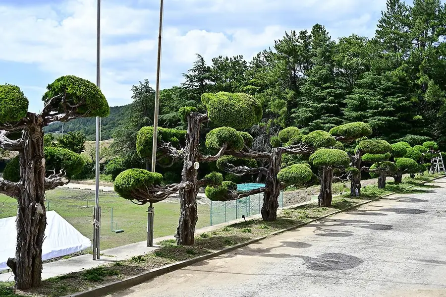
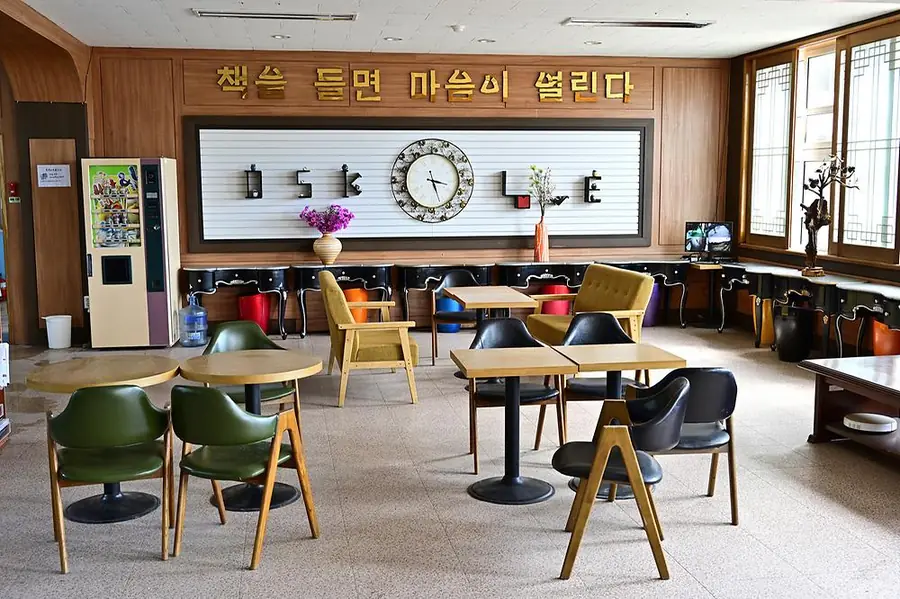
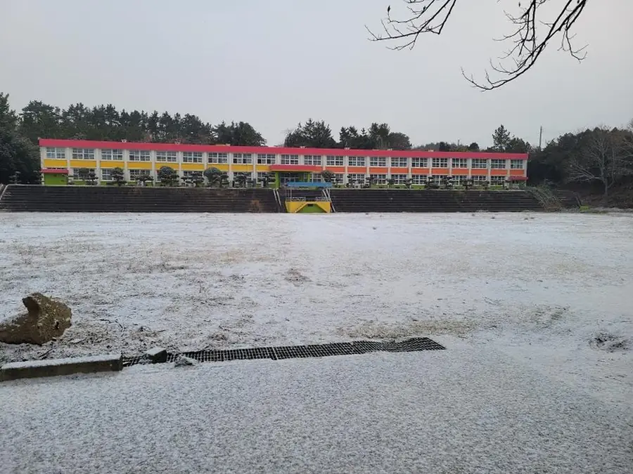
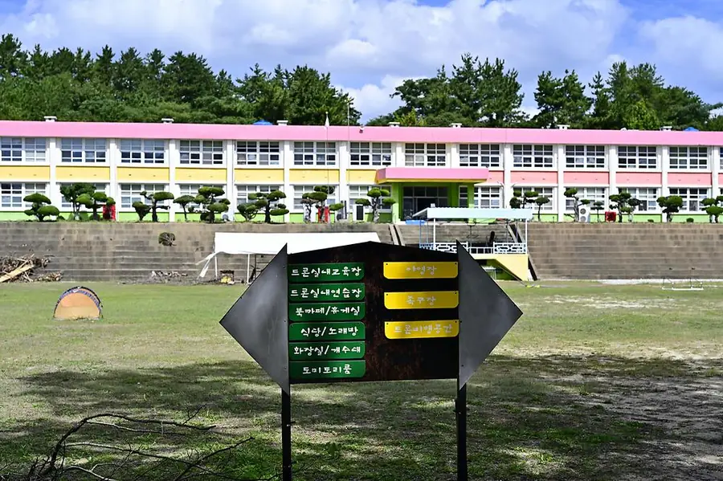
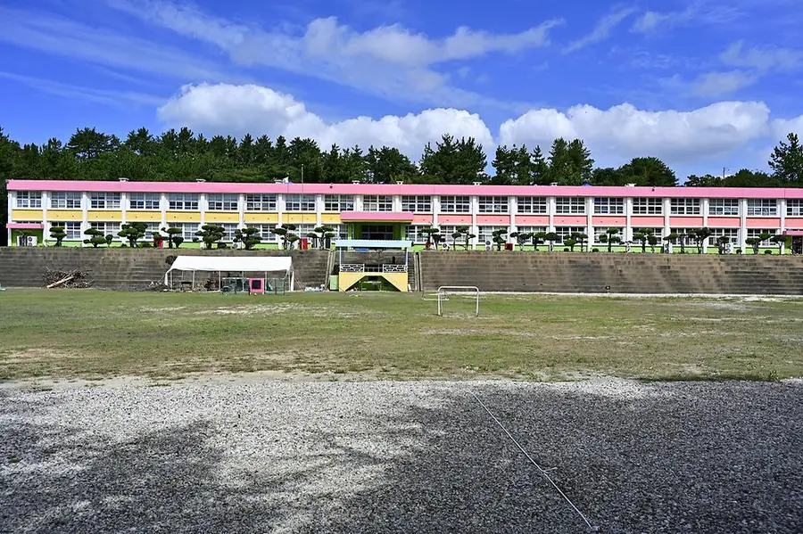
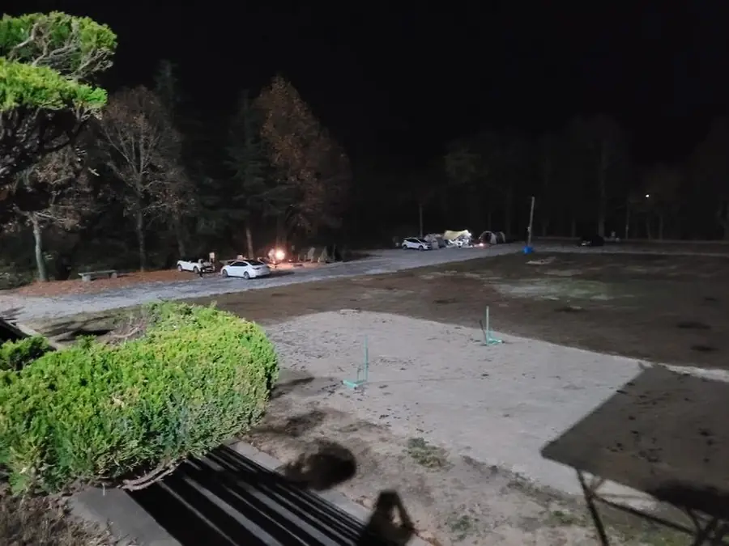
교육부터 레저, 관광, 금융 인프라까지 — 올인원 플랫폼
한국어 교육, 생활 적응, 다문화 이해 프로그램. 외국인 근로자 및 다문화 가정 대상.
방수/부력 드론 활용 낚시 체험. 신흥·풍남 방파제 포인트 연계. 전국 유일 콘텐츠.
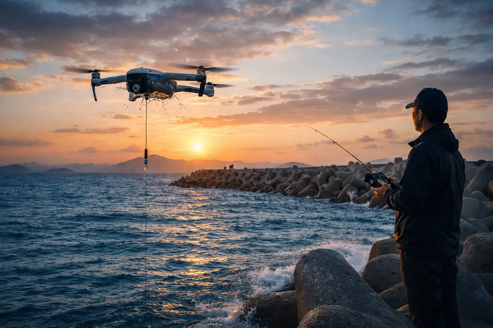
오토캠핑, 차박, 글램핑. 다문화가정 체험캠프, 농촌체험 프로그램. 사전 신청 →
청소년 안전교육, 팀빌딩, 드론+레이저 서바이벌 게임.
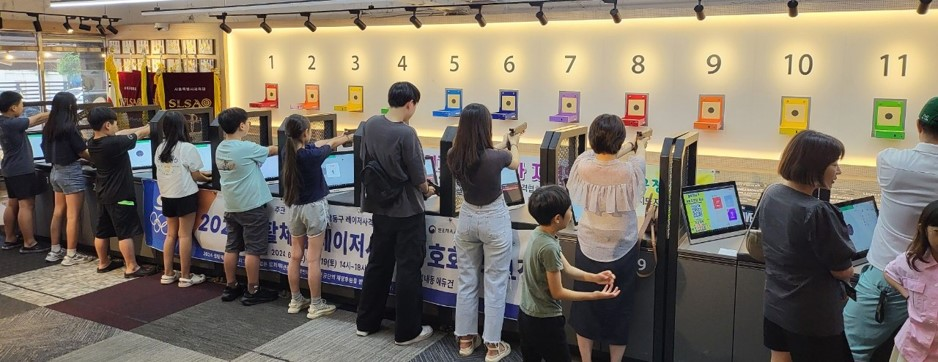
적대봉(거금도) 등 7개 숨은 코스. 제주 카페리 연계 관광 패키지.
고흥 유자·석류·양파 가공식품 매점 운영 및 계절별 수확 체험. 고흥몰 →
와이드모바일 통신 + 인터콜 외환송금 + 금융 서비스. 원스톱 정착 지원.
세종사이버대 동문회·SJ-ARC 드론 동아리 합숙훈련, 산학 실습 프로그램.
고흥의 바다와 산을 품은 캠핑장에서 특별한 밤을
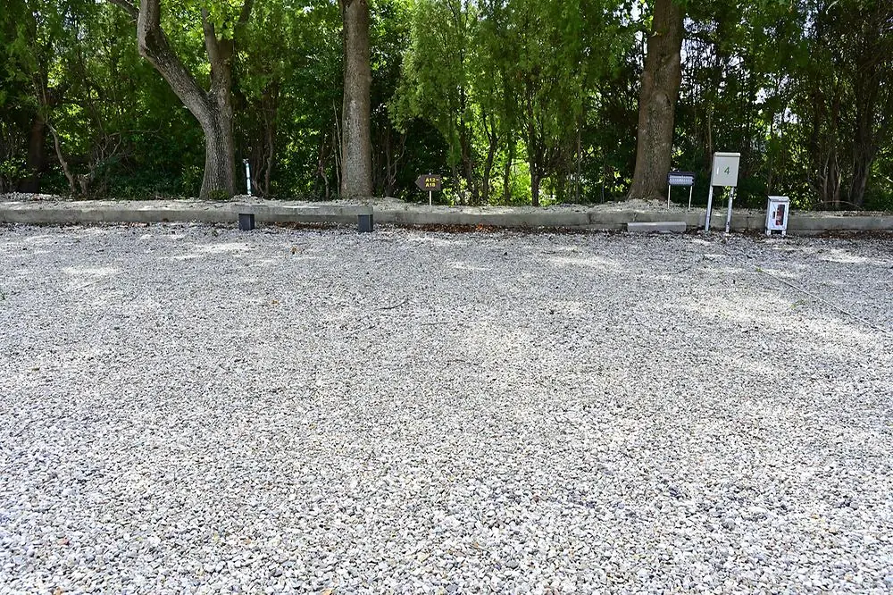
운동장 활용 넓은 오토캠핑 사이트. 차량 직접 진입 가능. 전기·수도 완비.
'차박' 트렌드에 맞춘 전용 구역. 평탄한 지면, 전원 공급.
감성 글램핑 텐트 제공. 침구·조명·테이블 세팅 완료. 빈손 캠핑 가능.
"우주에서 바다까지, 고흥에서 제주까지" — 잘 알려지지 않은 숨은 명소
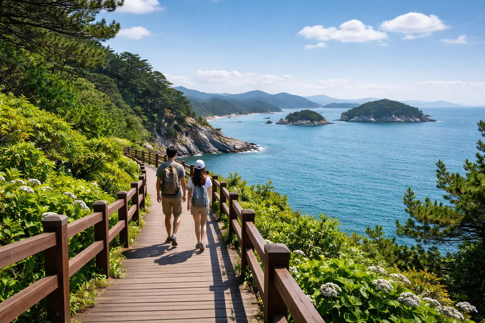
| 코스 | 위치 | 거리 / 시간 | 난이도 | 특징 |
|---|---|---|---|---|
| 적대봉 (592m) | 금산면 거금도 | 9km / 4시간 | 중 인접 | 코리아파크 인접! 맑은 날 제주도 조망 |
| 미르마루길 | 영남면 | 4km / 2시간 | 쉬움 | 해안 데크길, 우주발사전망대 연결 |
| 우도 레인보우교 | 남양면 | 1.32km | 쉬움 | 국내 최장 연륙 인도교, 일몰 명소 |
| 마복산 (538m) | 포두면 | 3~6km / 1.5~3시간 | 중 | 기암괴석, 다도해 파노라마 조망 |
| 천등산 (553m) | 풍양면 | - | 중 | 금탑사(원효대사), 비자나무숲 천연기념물 |
| 운암산 (484m) | 두원면 | - | 중 | 수도암 명수, 분청사기 가마터 30여기 |
| 두방산~첨산 암릉종주 | 동강면 | - | 상 | '점입가경' 암릉길, 숨은 코스 |
"하늘에서 즐기는 짜릿한 손맛" — 전국 유일 드론 낚시 체험
방수/부력 설계, 1축 짐벌 카메라로 포인트 탐색, 미끼 투하 장치로 원거리 정밀 투척.
신흥 방파제(가족 체험), 풍남 방파제(고급 챌린지). 캠핑장에서 드론 대여 후 비행.
배터리 충전 1~2시간 = 고흥만 꽃구름길 힐링 산책. 5,000보/60분/300kcal.
목적과 취향에 맞는 패키지를 선택하세요
드론 체험 + 적대봉 트레킹 + 캠핑 1박
드론 대여 + 낚시 포인트 비행 + 디톡스 트레킹
코리아파크 1박 + 녹동항 카페리 + 제주 1박
한국어 교육 + 트레킹 + 캠핑 + 유자청 체험
양파/유자/석류 수확 + 가공 체험 + 캠핑 1박
세종사이버대학교 자율비행 드론 전문가 양성 동아리와 함께합니다
금산면 양파 (코리아파크와 같은 면!) / 풍양면 유자 (전국 35%) / 석류 (전국 70~80%)
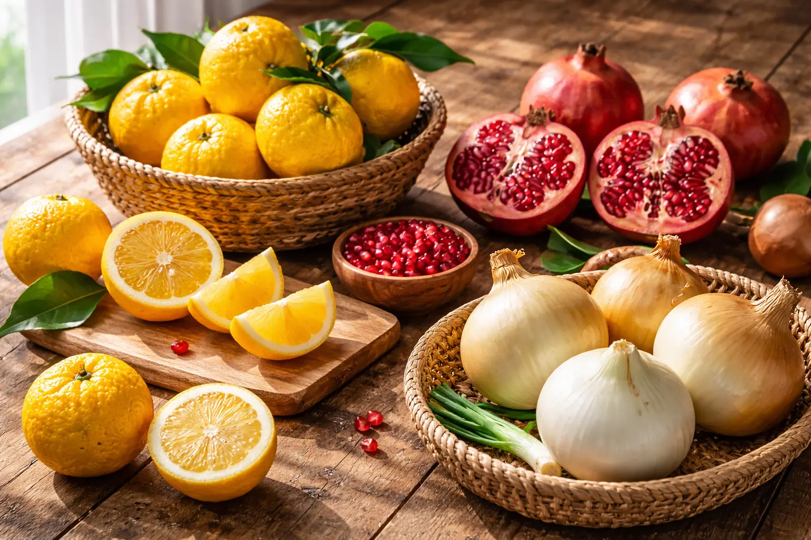
270농가, 337ha 조생종 양파. 해양성 기후로 단단하고 아삭한 식감. 수확 체험 4~6월.
전국 생산량 35%, 약 6,000톤. 껍질이 두텁고 향이 진한 고흥 유자. 수확 체험 11~12월.
전국 생산량 70~80%, 대한민국 최대 주산지. 당도 높고 과즙 풍부. 수확 체험 9~11월.
전남 고흥군 금산면 돈청길 25-17 (구 금산종합고등학교)
센트럴시티터미널 -> 녹동
하루 5회 / 약 4시간 15분
녹동에서 코리아파크까지 차량 20분
광주 유스퀘어: 20분 간격 운행
순천: 20~30분 간격 운행
고흥버스터미널에서 환승
녹동항 -> 제주 카페리
매일 09:00 출발 (12:30 도착)
차량 선적 가능 (캠핑카 OK)
온라인 예약 1522-2066
고흥에 왔다면 꼭 들러야 할 곳
| 장소 | 메뉴 | 위치 | 한줄평 |
|---|---|---|---|
| 평화국밥 | 모둠국밥 | 과역면 | 고흥 현지인 맛집, 든든한 한 끼 |
| 토박이 | 낙지볶음 | 도양읍 녹동 | 녹동항 인근, 매콤한 남도 맛 |
| 해돌마루카페 | 오션뷰 카페 | 금산면 거금도 | 코리아파크 인접! 바다 조망 카페 |
| mkr coffee | 에스프레소 | 도양읍 | 로스터리 카페, 커피 애호가 추천 |
| 고흥한우직판장 | 꽃등심 | 고흥읍 | 산지 직판 한우, 가성비 최고 |
ceo@korpark.com
전남 고흥군 금산면 돈청길 25-17
대표: 홍석찬 (Hong Suk Chan)
CEO / Drone Instructor / Multicultural Society Specialist